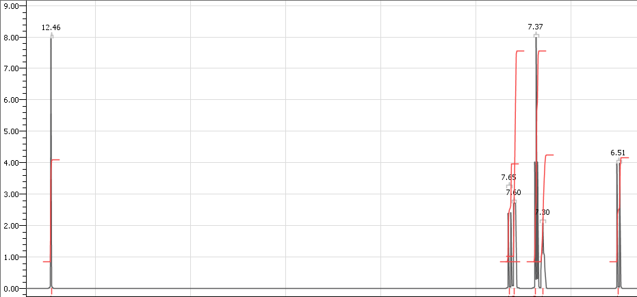

Jeppe Møldrup
Alt data fundet i databogen
Et af de vigtigste kobber
mineraler er kobberkis, der har formlen
|
a. |
Vis, at masseprocenten af kobber i kobberkis er 34.6% |
For at finde masseprocentan af kobber tager jeg kobbers molaremasse og dividerer med kobberkis’ molaremasse, idet de har forholdet 1:1 med hinanden


Så finder jeg hvor mange procent kobber udgør

Det kobber(1)oxid, der dannes ved reaktion 1, reagerer viderer med uomdannet kobber(I)sulfid og danner kobber.

|
b. |
Beregn
|

Jeg udregner
 med formlen
med formlen


Altså er
ændringen i standard entropi for reaktionen

|
c. |
Beregn indholdet af kobber i malmen udtrykt i masseprocent |
Under titreringen bliver der brugt 19.6 ml 0.0200 M thiosulfat. Jeg ganger volumnet med koncentrationen for at finde antal mol thiosulfat der blev brugt

Forholdet
mellem thiosulfat og diiod er 2:1, men forholdet mellem
diiod til kobber er 1:2 så de går ud med
hinanden, og derfor er der 0.000392 mol kobber.
Så jeg tager antallet mol kobber og ganger med den
molare masse for at finde massen af kobber

Så finder jeg hvor mange procent af de opbrindelige 200g kobberen udgør

Så kobbermalmen indeholder cirka 0.0125% kobber
|
a. |
Tegn strukturen af et stof, der er stereoisomer med A. Benyt tegneprogram |
HO
OH
O
|
a. |
Marker de funktionelle grupper i kanelsyre, og angiv hvilke stofklasser de tilhører |
O
OH
Carboxylsyre
Alken
carboxylsyregruppen tilhører stofklassen carboxylsyrer Alkengruppen tilhører stofklassen Alkener
En vandig opløsning af kanelsyre har koncentrationen 0.0034 M.
|
b. |
Angiv
|
 for kanelsyre er 4.44, fundet på wikipedia. For at
finde pH for kanelsyren bruger jeg formlen for ikke
stærke syrer i vand(
for kanelsyre er 4.44, fundet på wikipedia. For at
finde pH for kanelsyren bruger jeg formlen for ikke
stærke syrer i vand(
 højere end 4)
højere end 4)

Jeg indsætter værdierne

Så pH for opløsningen er cirka 3.45
|
c. |
Generer et
|

Her kan man se at alle integralernes forhold enten er 1 eller 2. De 2 steder hvor integralet er 2 er de to steder i den aromatiske ring hvor hydrogenatomerne er symmetriske og derfor har samme kemiske skift.
|
d. |
Forklar koblingsmønstre for signaler, der skyldes H-atomer i kanelsyre, som ikkme sidder på den aromatiske ring. Identificer urenheden i produktet. Argumenter ud fra kemiske skift, integralkurve og koblingsmønstre |
H-atomet lige umiddelbart før Alkengruppen har et kemisk skift ved 7.65 og 2 toppe idet det ligger tæt nok på H-atomet der ligger lige efter Alkengruppen, som har et kemisk skift ved 6.51 og også har 2 toppe af samme grund. H-atomet der sidder på O-atomet har et kemisk skift ved 12.46 og kun 1 top idet der er et O-atom mellem den og den nærmest H-atom. Hvis jeg genererer et HNMR-spektrum for benzaldehyd kommer der en top med kemisk skift ved 7.86, som passer meget godt med den top vi ser i figur 7 som ikke er i mit spektrum for kanelsyre.
|
e. |
Bestem, hvor stor en procentdel af produktets masse, der er kanelsyre. |
Den top der kommer lige under toppen ved 7.86 er fra kanelsyren, og derfor kan vi bruge de to toppe til at finde forholdet mellem benzaldehyd og kanelsyren. Forholdet mellem deres integraler er 1:4. idet de hver representerer 1 H-atom betyder det at der er 4 kanelsyrer molekyler for hvert 1 benzaldehyd molekyler. For at bestemme masseprocenten af produktet der er kanelsyrer bruger jeg formlen

Den molare
masse af kanelsyre fundet på wikipedia.
Så masseprocenten af produktet der er kanelsyre er
58.268%
Fordelingsforholdet er udtrykt
ved størrelsen
 , som er forholdet mellem kanelsyres formellem
koncentrationer i de to faser.
, som er forholdet mellem kanelsyres formellem
koncentrationer i de to faser.
|
f. |
Tegn en graf, som viser, hvordan
log
|
Her kan vi se at desto højere pH, desto mindre er
opløst i octanol. Så pH reguleres til at
være i det meget basiske område, fordi så
kan de opløse mest muligt af det i vand.
 for reaktion 2. Kommenter resultatet i forhold til
reaktionsskemaet
for reaktion 2. Kommenter resultatet i forhold til
reaktionsskemaet for kanelsyre. Beregn pH i opløsningen
for kanelsyre. Beregn pH i opløsningen H-NMR-spektrum med integralkurver af kanelsyre. Forklar
integralforholdene for signalerne i spektret ud fra
kanelsyres struktur.
H-NMR-spektrum med integralkurver af kanelsyre. Forklar
integralforholdene for signalerne i spektret ud fra
kanelsyres struktur. afhænger af pH for kanelsyre. Forklar, hvorfor pH
reguleres før ekstraktionen.
afhænger af pH for kanelsyre. Forklar, hvorfor pH
reguleres før ekstraktionen.